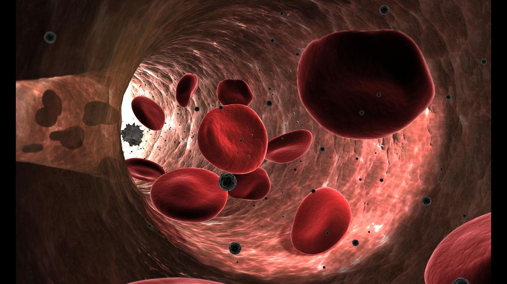

การหมุนเวียนของเลือด
อาหารที่เรากินเข้าไปเมื่อผ่านกระบวนการย่อยอาหารจะได้อนุภาคที่เล็กที่สุดซึ่งสามารถแพร่ผ่านเข้าสู่ผนังของลำไส้เล็กได้ จากนั้นจะแพร่เข้าสู่หลอดเลือด แล้วถูกนําไปยังส่วนต่างๆของร่างกายโดยระบบหมุนเวียนของเลือด เชนเดียวกับกาซออกซิเจนที่เมื่อถูกนำเข้าสู่ร่างกายแล้วจะถูกนําไปยังเซลล์ต่างๆของร่างกายโดยเม็ดเลือดแดง และก๊าซคาร์บอนไดออกไซด์ที่เกิดจากกระบวนการหายใจ จะถูกลําเลียงออกจากเซลล์ทางพลาสมา ซึ่งการหมุนเวียนของเลือดและการหมุนเวียนของก๊าซจะเกิดควบคู่กันไป ในระบบหมุนเวียนเลือดประกอบด้วย เลือด หลอดเลือด และ หัวใจ
หัวใจ
หัวใจของมนุษย์มีขนาดเท่ากับกำปั้นที่กำแน่นของผู้ที่เป็นเจ้าของ
หัวใจ (heart) ทําหน้าที่สูบฉีดเลือดให้ไหลไปตามหลอดเลือดไปยังส่วนต่างๆของร่างกาย แล้วไหลกลับคืนสู่หัวใจ หัวใจประกอบด้วยกล้าเนื้อพิเศษที่เรียกว่า กล้ามเนื้อหัวใจ แบ่งห้องออกเป็นห้องบน (atrium) 2 ห้อง และห้องล่าง (ventricle) 2 ห้อง หัวใจห้องบนจะเล็กกว่าห้องล่าง ระหว่าง หัวใจห้องบนและห้องล่างจะมีลิ้นกั้นเพื่อป้องกันไม่ให้เลือดไหลย้อนกลับ หัวใจห้องล่างซ้ายจะมี ผนังหนาที่สุด ระบบหมุนเวียนของเลือดในคน
ในร่างกายมนุษย์มีหัวใจทำหน้าที่สูบฉีดโลหิตให้ไหลเวียนอยู่ในเส้นเลือด การสูบฉีดโลหิตของหัวใจ ทำให้เกิดแรงดันให้เลือดไหลไปตามเส้นเลือดไปยังส่วนต่างๆของร่างกาย และไหลกลับคืนสู่หัวใจ โดยหัวใจของคนเราตั้งอยู่ในทรวงอกระหว่างปอดทั้งสองข้างค่อนมาทาด้านซ้ายชิดผนังทรวงอก แบ่งออกเป็น 4 ห้อง ห้องบนสองห้อง มีผนังบาง เรียกว่า เอเทรียม ( atrium ) ส่วนสองห้องล่างมีขนาดใหญ่กว่าและผนังหนา เรียกว่า เวนทริเคิล ( ventricle ) ระหว่างห้องบนกับห้องล่างทั้งสองซีกจะมีลิ้นหัวใจ ( value ) คอยเปิด- ปิด เพื่อกันไม่ให้เลือดไหลย้อนกลับ
** หัวใจของคนเราประกอบไปด้วยกล้ามเนื้อที่มิได้อยู่ภายใต้อำนาจบังคับของสมอง **
** หัวใจของสัตว์เลี้ยงลูกด้วยนม มี 4 ห้อง ของสัตว์ครึ่งบกครึ่งน้ำมี3 ห้อง ( ยกเว้นจระเข้ มี 4 ห้อง ) หัวใจปลามี 2 ห้อง หัวใจของสัตว์ปีก มี 4 ห้อง **
เพราะหัวใจห้องล่างซ้ายมีหน้าที่สูบฉีดเลือดไปยังส่วนต่างๆของร่างกาย
ในร่างกายของมนุษย์ ระบบการหมุนเวียนของเลือดประกอบด้วยหัวใจเป็นอวัยวะสำคัญ ทำหน้าที่สูบฉีดเลือดไปยังส่วนต่างๆของร่างกาย โดยมีเส้นเลือดเป็นท่อลำเลียงเลือด ดังนั้นระบบหมุนเวียนเลือดของคนเราจึงประกอบด้วยส่วนสำคัญ 3 ส่วน คือ เลือด เส้นเลือด และ หัวใจ
-
1. เลือด ( blood ) ในร่างกายของคนเรามีเลือดอยู่ประมาณ 6,000 ลูกบาศก์เซนติเมตร เลือดประกอบไปด้วยส่วนที่เป็นของเหลว คือ น้ำเลือด ( plasma ) กับส่วนที่เป็นของแข็ง คือ เซลล์เม็ดเลือดแดง เซลล์เม็ดเลือดขาว และ เกล็ดเลือด

- 1.1 ส่วนที่เป็นของหลว คือ น้ำเลือดหรือพลาสมา ประกอบด้วยน้ำและสารต่างๆ ซึ่งได้แก่ สารอาหารที่ถูกย่อยแล้ว รวมทั้งวิตามิน เกลือแร่ ฮอร์โมนและสารอื่นๆที่ละลายน้ำได้ สารเหล่านี้จึงอยู่ในรูปสารละลาย มีประมาณ 50 % ของเลือดทั้งหมด น้ำเลือดทำหน้าที่ลำเลียงอาหารที่ถูกดูดซึมจากลำไส้เล็กไปสู่ส่วนต่างๆของเซลล์ทั่วร่างกายและลำเลียงของเสียที่เป็นของเหลวจากเซลล์ เช่น ยูเรีย มาสู่ไต ซึ่งไตจะสกัดเอาสารยูเรียออกจากเลือดแล้วขับถ่ายออกมาในรูปของปัสสาวะ
- 1.2 ส่วนที่เป็นของแข็ง มีอยู่ประมาณ 50% ของเลือดทั้งหมด ประกอบด้วย
- - เซลล์เม็ดเลือดแดง ในขณะที่ยังเจริญเติบโตไม่เต็มที่ จะอยู่ในไขกระดูกและมีนิวเคลียส แต่เมื่อเจริญเติบโตเต็มที่จะเข้าไปอยู่ในกระแสเลือดแล้วนิวเคลียสจะหายไป เม็ดเลือดแดงทำหน้าที่ขนส่งแก๊สออกซิเจน จากปอดไปสู่เซลล์ทั่วร่างกายและขนส่งแก๊สคาร์บอนไดออกไซด์ ซึ่งเป็นของเสียที่เกิดจากการสลายอาหารจากเซลล์มาสู่ถุงลมในปอดเพื่อขับถ่ายออกนอกร่างกายทางลมหายใจออก โดยเฉลี่ยเม็ดเลือดแดงจะมีชีวิตอยู่ในกระแสเลือดประมาณ 90- 120 วัน หลังจากนั้นจะถูกส่งไปทำลายที่ตับและม้าม
- - เซลล์เม็ดเลือดขาว มีขนาดใหญ่กว่าเซลล์เม็ดเลือดแดง ภายในมีนิวเคลียส ทำหน้าที่ทำลายเชื้อโรคหรือสิ่งแปลกปลอมที่เข้าสู่ร่างกาย
- - เกล็ดเลือด เป็นชิ้นส่วนของเซลล์ที่มีรูปร่างเป็นแผ่นเล็กๆปนอยู่ในน้ำเลือด ไม่มีนิวเคลียส มีหน้าที่ช่วยให้เลือดแข็งตัว เวลาเกิดบาดแผลเล็กๆเกล็ดเลือดจะทำให้เส้นใย ( fibrin ) ปกคลุมบาดแผลทำให้เลือดหยุดไหล เป็นการป้องกันไม่ให้ร่างกายเสียเลือดมากเกินไป เกล็ดเลือดจะมีอายุอยู่ได้ประมาณ 4 วัน
-
2. เส้นเลือด ( blood vessels ) เส้นเลือดในร่างกายคนแบ่งออกได้ 3 ประเภท คือ
- - เส้นเลือดที่นำเลือดออกจากหัวใจ เรียกว่า อาร์เทอรี ( Artery )
- - เส้นเลือดที่นำเลือดเข้าสู่หัวใจ เรียกว่า เส้นเวน ( Vein )
- - เส้นเลือดฝอย ( Capillaries )
เส้นเลือดอาร์เทอรี (Artery)
- เส้นเลือดอาร์เทอรี เป็นเส้นเลือดที่นำเลือดออกจากหัวใจ มีขนาดต่างๆกัน ขนาดใหญ่คือ เอออร์ตา มีเส้นผ่านศูนย์กลางประมาณ 1 นิ้ว และขนาดเล็กมีเส้นผ่านศูนย์กลาประมาณ 0.2 มิลลิเมตร ไม่มีลิ้น เส้นเลือดอาร์เทอรี ประกอบด้วยกล้ามเนื้อและเนื้อเยื่อที่ยืดหยุ่นได้ มีผนังหนา สามารถรับแรงดันเลือด ซึงเป็นแรงดันค่อนข้างสูง อันเป็นผลเนื่องมาจากการบีบตัวของหัวใจห้องล่าซ้าย ความดันของเลือดจะสูงมากในเส้นเลือดอาร์เทอรีใกล้หัวใจ คือ เส้นเลือดแดงใหญ่ที่สุดที่เรียกว่า เอออร์ตา และค่อยๆลดลงตามลำดับเมื่ออยู่ห่างจากหัวใจไปเรื่อยๆจนถึงอวัยะต่างๆดังนั้นการวัดความดันเลือด เส้นเลือดที่เหมาะสำหรับวัดความดันเลือดคือเส้นอาร์เทอรีที่ต้นแขน ผู้ใหญ่อายุ 20 - 30 ปี มีความดันเลือดปกติประมาณ 120/80 มิลลิเมตรปรอท ตัวเลขข้างหน้า ( 120 )หมายถึง ความดันโลหิตขณะหัวใจบีบตัว เรียกว่าความดันซิสโทลิก ( Systolie pressure ) ตัวเลขข้างหลัง( 80 ) หมายถึงความดันดลหิตของหัวใจคลายตัว เรียกว่า ความดันไดแอสโทลิก ( Diastolie pressure ) ที่เรียกว่า การจับชีพจร ซึ่งชีพจร ( pluse ) หมายถึงอัตราการเต้นของหัวใจ จงหวะการหยืดหยุ่นของเส้นเลือดอาร์เทอรีเป็นไปตามจังหวะการเต้นของหัวใจ สำหรับการเต้นของหัวใจปกติประมาณ 72 ครั้งต่อนาที แต่อาจเปลี่ยนแปลงได้ตามลักษณะต่างๆ เช่น เพศ วัย อิริยาบท โรคภัยไข้เจ็บ เป็นต้น
3. หัวใจ ( heart )

หัวใจจะทำหน้าที่สูบฉีดโลหิตไปเลี้ยงส่วนต่างๆของร่างกาย โดยจะรับเลือดที่มีออกซิเจนสูงจากปอดเข้าทางหัวใจห้องบนซ้ายผ่านต่อมายังหัวใจห้องล่างซ้าย เพื่อส่งออกไปยังอวัยวะต่างๆขอองร่างกายและจะรับเลือดที่มีออกซิเจนน้อยจากส่วนต่างๆของร่างกายกลับเข้าสู่หัวใจทางหัวใจห้องบนขวา
และผ่านไปยังหัวใจห้องล่างขวาเพื่อส่งไปยังปอด เลือดที่มีออกซิเจนต่ำจะไปยังปอดเพื่อรับออกซิเจนและกลับเข้าสู่หัวใจอีกครั้งหมุนเวียนตลอดเวลาอย่างเป็นระบบ หรือกล่าวได้ว่าเลือดดำ ( เลือดที่มีแก๊สออกซิเจนต่ำ )จากส่วนต่างๆ ของร่างกายไหลเข้าหัวใจทางหัวใจห้องบนขวาโดยเลือดจากส่วนบนของร่างกายจะเข้าสู่หัวใจทางเส้นเลือดซูปิเรียเวนาคาวาและเลือดจากส่วนล่างของร่างกายจะเข้าสู่หัวใจห้องบนขวาทางเส้นเลือดอินพีเรียเวนาคาวา
จากนั้นหัวใจห้องบนขวาจะหดตัวให้เลือดผ่านลิ้นหัวใจลงสู่หัวใจห้องล่างขวาแล้วหัวใจห้องล่างขวาจะบีบตัวให้เลือดไปเข้าไปในเส้นเลือดพัลโมนารีอาร์เทอรีจากหัวใจไปยังปอด เลือดดำจะผ่านเข้าไปในเส้นเลือดฝอยรอบๆถุงลมปอด แล้วจ่ายคาร์บอนไดออกไซด์ให้กับถุงลมปอดแล้วรับแก๊สออกซิเจนเข้ามาแทนเป็นผลให้เลือดดำกลายเป็นเลือดแดง
( เลือดที่มีแก๊สออกซิเจนสูง ) แล้วไหลออกจากปอดเข้าสู่หัวใจห้องบนซ้ายทางเส้นเลือดพัลโมนารีเวนจากนั้นหัวใจห้องบนซ้ายจะบีบเลือดลงไปที่หัวใจห้องล่างซ้าย เพื่อให้หัวใจห้องล่างซ้ายบีบเลือดไปเลี้ยงส่วนต่างๆของร่างกายต่อไป การไหลเวียนเลือดการไหลเวียนเลือด
1 รอบ เลือดต้องไหลผ่านหัวใจ 2 ครั้งคือ ครั้งแรกเลือดถูกสูบฉีดออกจากหัวใจห้องล่างขวาไปยังปอดเพื่อรับออกซิเจนที่เราหายใจเข้าไป จากนั้นเลือดจะไหลกลับเข้าสู่หัวใจห้องบนซ้าย ลงสู่ห้องล่างซ้าย แล้วถูกสูบฉีดเพื่อนำออกซิเจนไปยังส่วนต่าง ๆ ของร่างกาย
แล้วไหลกลับสู่หัวใจเพื่อเริ่มต้นการไหลเวียนรอบใหม่